2.6 구글 코랩(Google Colab) 환경 설정 및 사용법
학습목표: 구글 코랩(Google Colab)의 특징을 이해하고, 접속부터 파일 생성, 코드 실행 및 시각화 준비, 데이터 전처리, 그리고 구글 드라이브 연동 저장까지 코랩을 완벽하게 활용하는 방법을 배웁니다.
1. 구글 코랩(Colab) 개요
구글 코랩(Google Colab)은 구글이 제공하는 클라우드 기반의 주피터 노트북(Jupyter Notebook) 환경입니다.
주로 파이썬을 기반으로 한 데이터 분석, 머신러닝, 딥러닝 등의 작업을 수행할 때 그 진가를 발휘합니다.
코랩은 브라우저에서 실행되며, 무료로 사용할 수 있는 가상 머신을 제공하여 사용자가 별도로 고성능 서버를 구축하지 않고도 하드웨어 자원을 활용할 수 있게 해줍니다.
코랩의 주요 특징
- 무료 GPU 지원: 무료로 사용할 수 있는 GPU를 제공하여 딥러닝 모델 학습 등에 매우 유용합니다.
- 클라우드 기반: 모든 작업은 구글 클라우드 서버에서 이루어지기 때문에 내 컴퓨터(로컬 환경)의 사양 성능에 구애받지 않습니다.
- 주피터 노트북 통합: 기존 주피터 노트북과 완벽히 호환되어 코드와 문서를 함께 작성하고 시각화할 수 있습니다.
- 필수 패키지 사전 설치: Pandas, Numpy, Matplotlib 등 주요 데이터 과학 패키지가 이미 설치되어 있습니다.
- 구글 드라이브 연동: 구글 드라이브 파일과 동기화되어 코드 및 데이터를 손쉽게 저장하고 언제든 꺼내 쓸 수 있습니다.
2. 코랩 접속 및 새 파일(노트북) 생성하기
구글 계정이 없다면 먼저 계정을 만듭니다. 구글 계정으로 로그인한 후 코랩 홈페이지에 접속하여 문서 작업을 시작해 봅니다.
브라우저 접속
웹 브라우저 주소창에 https://colab.research.google.com을 입력하여 이동합니다.
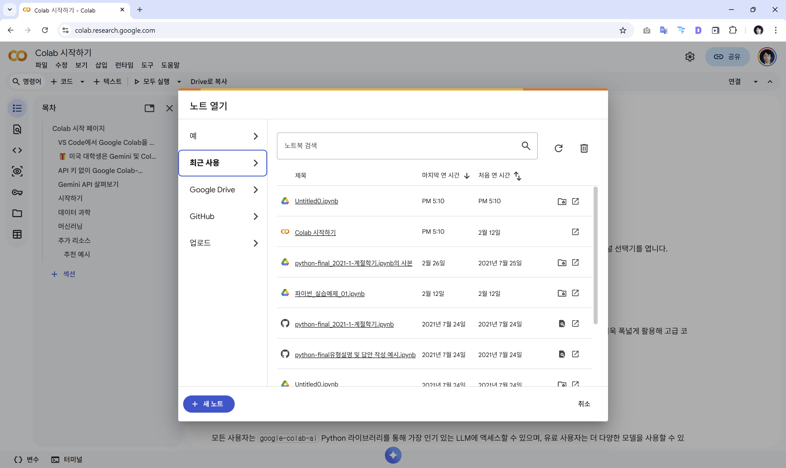
새노트 생성
팝업으로 뜨는 [노트 열기] 화면 우측 하단의 [+ 새 노트] 버튼을 클릭합니다.
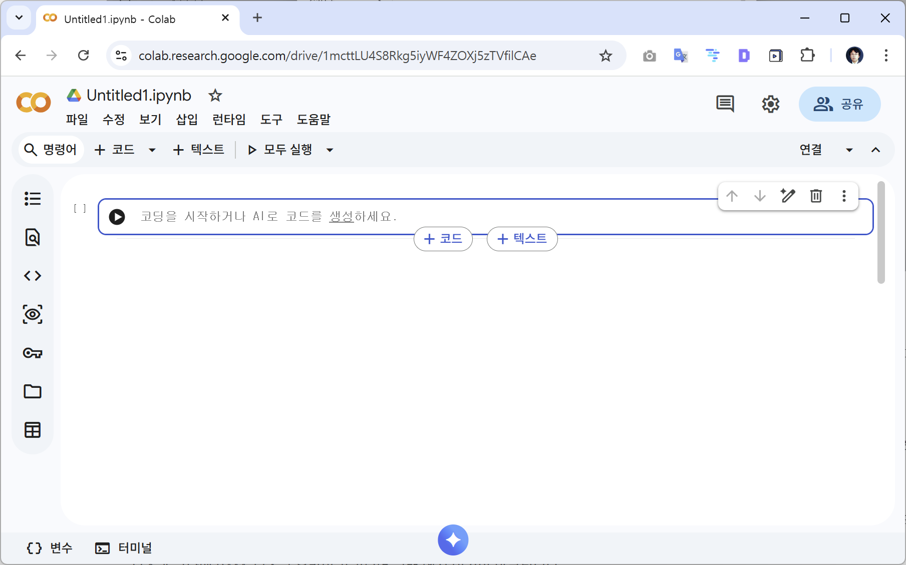
새로운 파일이 생성되면 좌측 상단에 Untitled0.ipynb라는 임시 파일 이름이 보입니다.
이 파일명을 클릭하여 원하는 이름으로 변경해 줍니다.
연결
문서를 편집하거나 코드를 실행하기 전, 구글 서버PC 한 대를 대여받기 위해 우측 상단의 [연결] 버튼을 누릅니다.
우측과 하단에 RAM, 디스크 용량이 표기되며 코랩 엔진 연결이 완료됩니다.
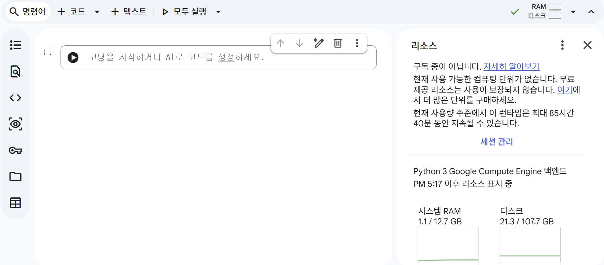
3. 셀(Cell)의 이해와 코드 실행 메커니즘
주피터 노트북 환경은 셀(Cell)이라는 네모난 블록 단위로 이루어져 있습니다.
셀은 크게 코드 셀과 텍스트 셀로 나뉩니다.
- 코드 셀(Code Cell): 실제 파이썬 코드를 작성하고 계산 식을 적어 넣는 공간입니다.
- 텍스트 셀(Text Cell): 설명문, 제목 등을 마크다운(Markdown) 문법으로 자유롭게 꾸며서 작성하는 발표형 문서 공간입니다.
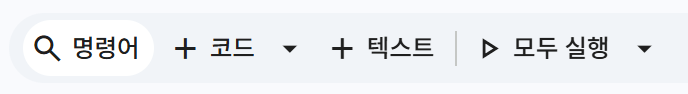
마크다운이란?
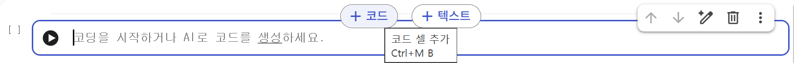
텍스트 셀에 마크다운을 적으면 우측에 즉시 미리보기가 표시되어 깔끔한 문서를 조판할 수 있습니다.
코드 셀에 파이썬 코드를 입력한 후, 셀 왼쪽의 둥근 재생(▶) 버튼을 누르거나 키보드 단축키인 Shift + Enter를 누르면 코드가 실행되고 그 결괏값이 셀 바로 밑에 출력됩니다.
좌측에 뜨는 [1], [2] 표시는 코드를 실행한 순서를 나타냅니다.
import sys
sys.version
'3.10.12 (main, Nov 20 2023, 15:14:05) [GCC 11.4.0]'
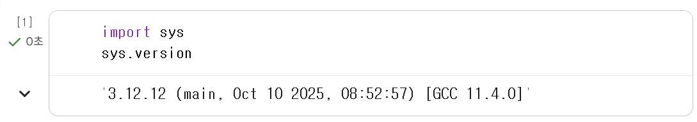
참고: 위처럼 코랩은 구글의 거대한 리눅스 서버망을 대여받아 사용하는 것이기 때문에, 내 PC(로컬) 환경과는 파이썬 설치 경로와 버전이 조금씩 다를 수 있습니다.
4. 데이터 시각화를 위한 한글 폰트 준비
코랩에서는 기본적으로 영어 폰트만 지원하기 때문에, 한글로 된 제목을 넣은 그래프를 그리면 글자가 네모 모양(ㅁㅁㅁ)으로 모두 깨져버립니다.
아래의 3단계 코드를 순서대로 실행시켜 시각화 그래프를 선명하게 만들고 한글 깨짐 방지 패키지를 설치합니다.
# 2.6 그림을 망막(Retina) 디스플레이에도 선명하게 출력하도록 설정
%config InlineBackend.figure_format = 'retina'
# 2.6 한글 출력 모듈 강제 설치 (!pip 명령어는 코랩(리눅스) 서버에 직접 다운로드 명령을 내립니다.)
!pip install koreanize-matplotlib
# 2.6 필요 패키지 import 후 정상 작동 테스트
import koreanize_matplotlib
import matplotlib.pyplot as plt
plt.title('데이터 시각화의 한글 준비와 기본 직선 그래프')
plt.plot([10, 5, 20, 30])
plt.show() # 한글이 깨지지 않고 예쁜 꺾은선 그래프가 나타납니다.
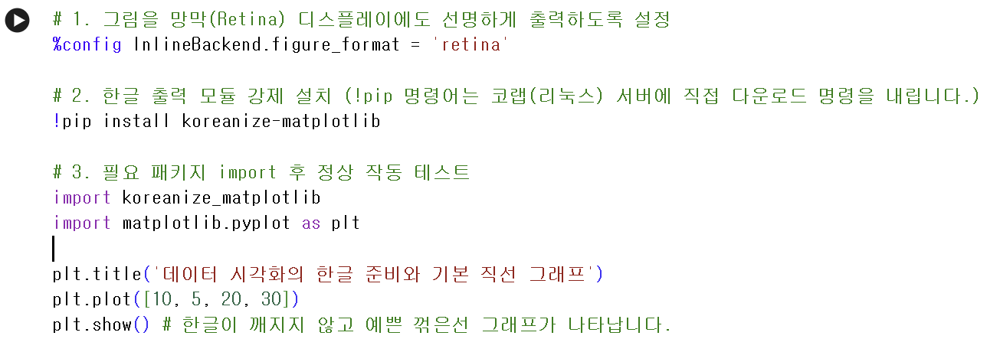
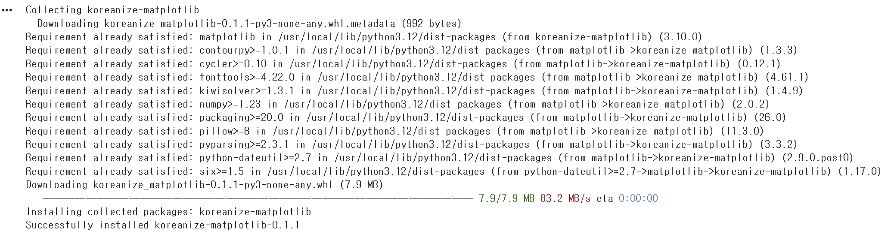
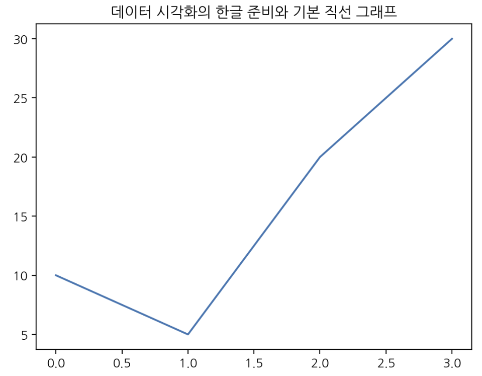
5.추가 실습
import site
site.getsitepackages()
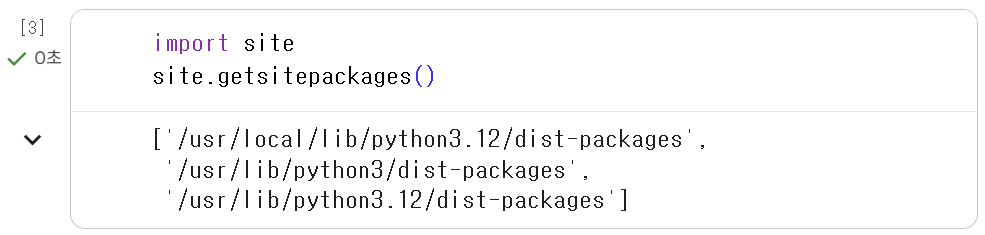
import sys
sys.version
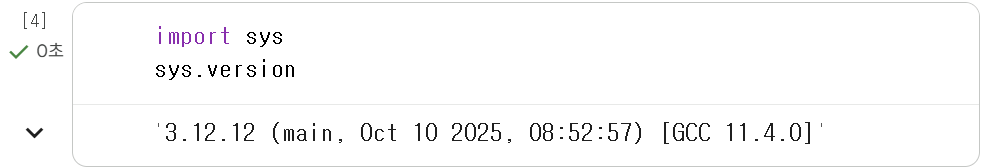
6. 나의 엑셀/CSV 데이터파일 업로드 및 처리
내 컴퓨터 바탕화면에 있는 엑셀이나 CSV 파일을 코랩 서버로 가져와 분석하는 방법입니다.
6.1 학습 셈플 데이터 받기
https://jumin.mois.go.kr/statMonth.do 로 접속합니다.
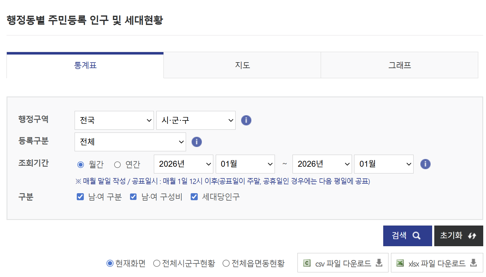
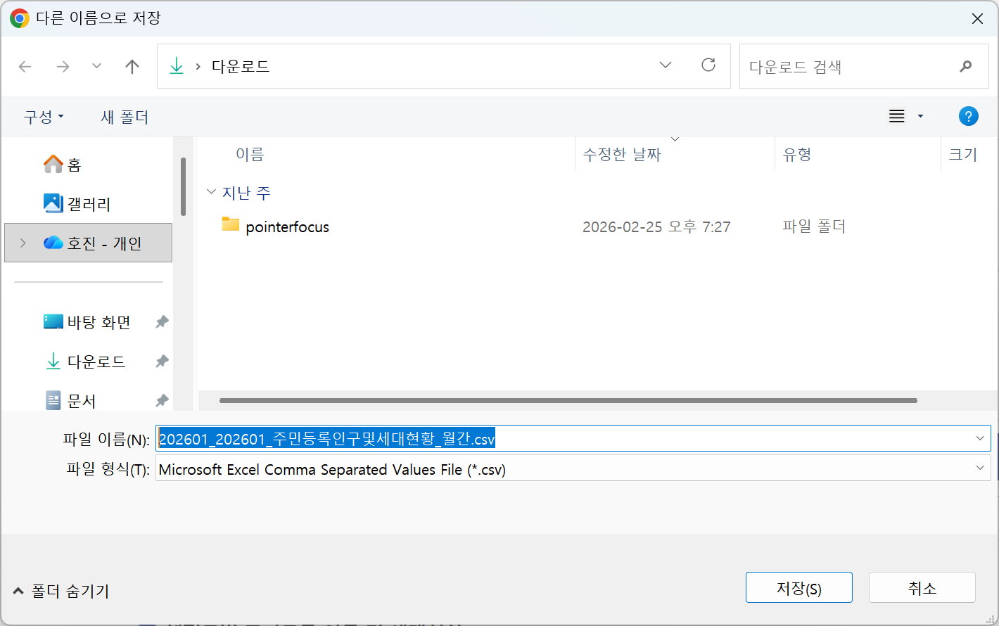
저장합니다.
6.2 업로드
코랩 좌측 메뉴 바에서 두꺼운 [폴더] 모양 아이콘을 클릭합니다.
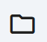
내 컴퓨터의 ‘행정안전부 주민등록 인구통계 파일’을 브라우저 좌측 여백으로 드래그 앤 드롭하여 업로드합니다.
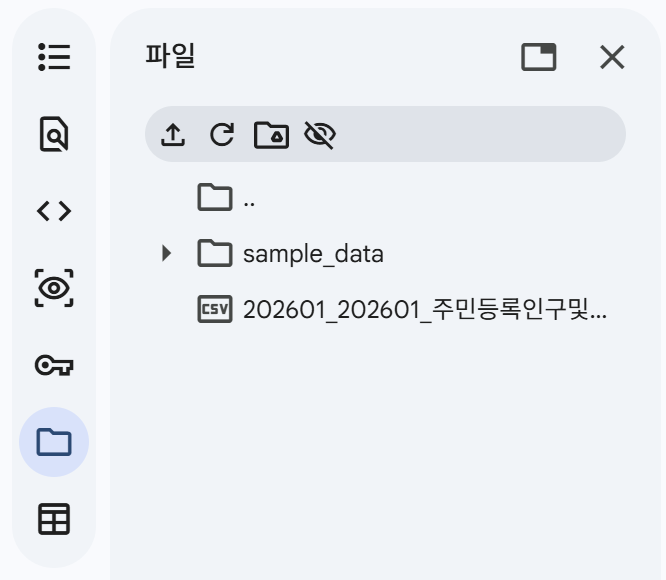
주의: “런타임이 종료되면 파일이 삭제된다”는 경고창이 뜹니다.
이는 코랩 서버 컴퓨터를 끄면 서버에 올린 임시 파일도 사라진다는 뜻이므로 [확인]을 누르면 됩니다.
6.3 Pandas 로 읽어오기
올라간 파일을 Pandas 라이브러리로 읽어 전처리하는 예시 코드입니다.
import pandas as pd
# 2.6 한글 파일(cp949)을 깨지지 않게 읽고 콤마(,) 숫자를 정수로 인식하게 하여 불러옴
pop = pd.read_csv("202311popmonth.csv", encoding='cp949', index_col=0, thousands=',')
# 2.6 컬럼명(열 제목) 깔끔하게 재정의
pop.columns = ['총인구수', '세대수', '세대당인구', '남자인구수', '여자인구수', '남여비율']
# 2.6 지저분하게 작성된 텍스트 인덱스를 띄어쓰기 기준으로 앞부분 단어 지역명만 뽑아서 깔끔하게 자름
pop.index = [pop.index[i].split()[0] for i in range(len(pop))]
pop.head() # 상위 5개 데이터 미리보기
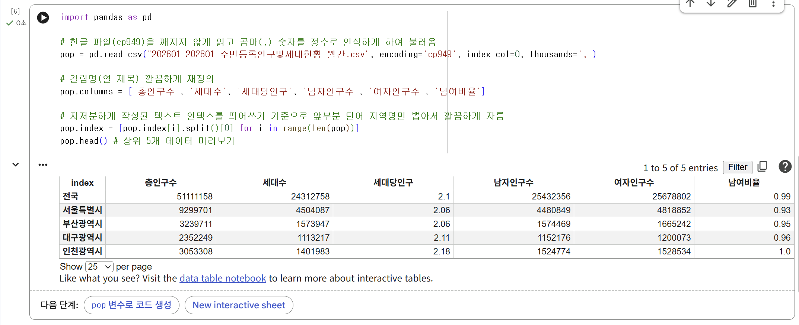
간단하게 전처리된 인구수 데이터를 시각화 함수(sns.scatterplot)에 넣어 아름다운 분포 차트를 그릴 수 있습니다.
import seaborn as sns
sns.scatterplot(pop['총인구수'])
plt.xticks(rotation=90) # 행정구역 이름이 겹치지 않게 90도로 세워줌
plt.show()
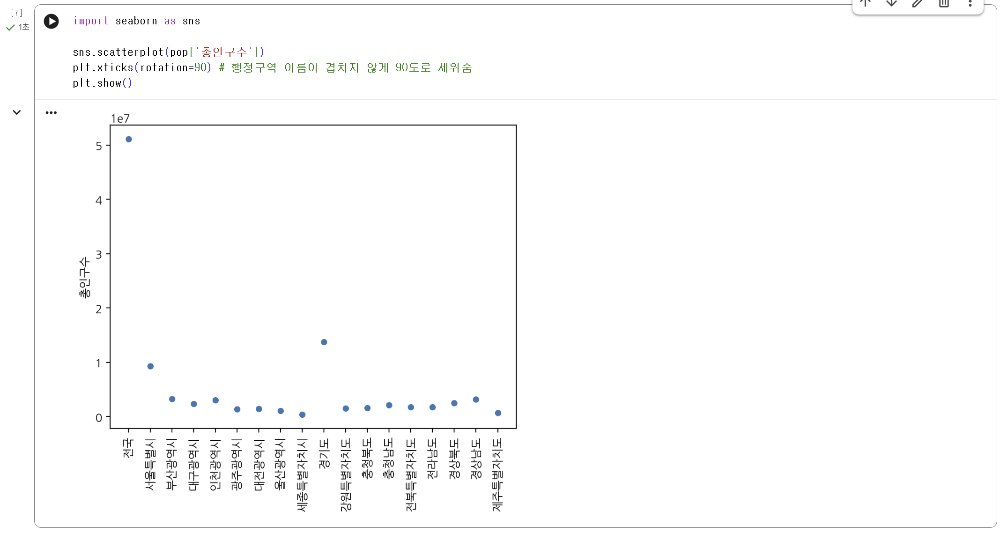
7. 노트북 파일 안전하게 구글 드라이브에 저장하기
열심히 작성한 노트북의 파이썬 코드들은 내 구글 아이디의 구글 드라이브에 안전하게 보관할 수 있습니다.
- 좌측 상단 메뉴 모음에서 [파일] -> [저장(S)]을 누르면 구글 드라이브 내 정해진 영역에 자동 동기화되어 저장됩니다. (
Ctrl + S키보드 단축키 사용 추천)
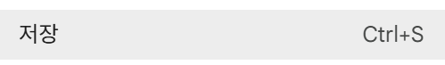
- [Drive에 사본 저장] 버튼을 누르면 원본을 그대로 냅두고 똑같은 복사본 노트북 탭을 생성시켜 2개를 분기하여 작업할 수 있습니다.
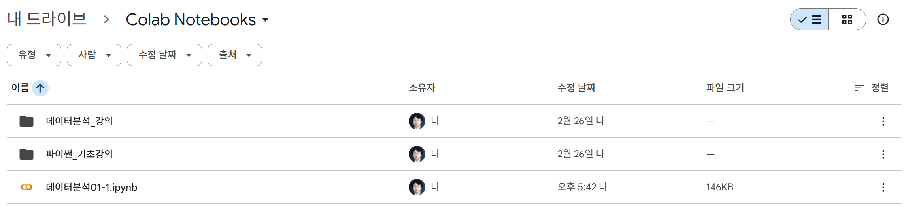
보관된 모든 나의 노트북 파일들은 컴퓨터나 스마트폰에서 내 구글 드라이브로 직접 접속 시 Colab Notebooks 라는 전용 폴더 하위 위치에 완벽하게 일괄 저장되어 있음을 언제든 확인할 수 있습니다.
정리
간단하게 코랩 사용법에 대해서 알아 보았습니다.
실습파일 : https://colab.research.google.com/drive/1mcttLU4S8Rkg5iyWF4ZOXj5zTVfilCAe?usp=sharing